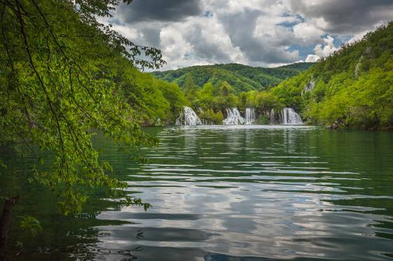

With its exceptional natural beauty, this area has always attracted nature lovers, and already on 8 April 1949, it was proclaimed Croatia’s first national park. The process of tufa formation, which results in the building of the tufa, or travertine, barriers and resulted in the creation of the lakes, is the outstanding universal value, for which the Plitvice Lakes were internationally recognised on 26 October 1979 with their inscription onto the UNESCO World Heritage List. In 1997, the boundaries of the national park were expanded, and today it covers an area just under 300 km2. The park is primarily covered in forest vegetation, with smaller areas under grasslands. The most attractive part of the park – the lakes – cover just under 1% of the total park area. The lake system is comprised of 16 named and several smaller unnamed lakes, cascading one into the next. Due to the geological substrate and characteristic hydrogeological conditions, the lake system has been divided into the Upper and Lower lakes. The twelve lakes forming the Upper Lakes are: Prošćansko jezero, Ciginovac, Okrugljak, Batinovac, Veliko jezero, Malo jezero, Vir, Galovac, Milino jezero, Gradinsko jezero, Burgeti and Kozjak. These lakes were formed on impermeable dolomite rock, and are larger, with more indented and gentler shores than the Lower Lakes. The Lower Lakes, consisting of the lakes Milanovac, Gavanovac, Kaluđerovac and Novakovića Brod, were formed in permeable limestone substrate, cut into a deep canyon with steep cliffs. The lakes end in the impressive waterfalls Sastavci, with the Korana River springing under the base of the falls. The Plitvice Lakes National Park offers visitors seven different routes to tour the lake system, and four hiking trails. The park is open to visitors year round. All visitors are required to follow the instructions listed on the information panels, to keep on the marked trails, and to leave no traces of their visit, such as litter, or marking or devastating nature in any form. The following is strictly prohibited in the National Park: Collection of plant materials, or taking any “souvenirs” of natural origin Feeding the animals Swimming in the lakes Disposal of litter along the trails or elsewhere, except in the garbage bins installed throughout the park Straying off the marked trails We recommend: Wearing the appropriate clothing and footwear Bringing adequate rain and sun protection (umbrella, raincoat; sunglasses, hat, sunscreen – depending on the season) Check the weather forecast before coming to the park Be sure to check the information listed on our website about the length of certain trails, to ensure to you have enough time to complete the desired tour